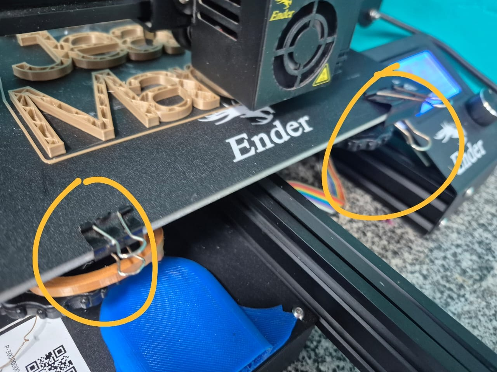
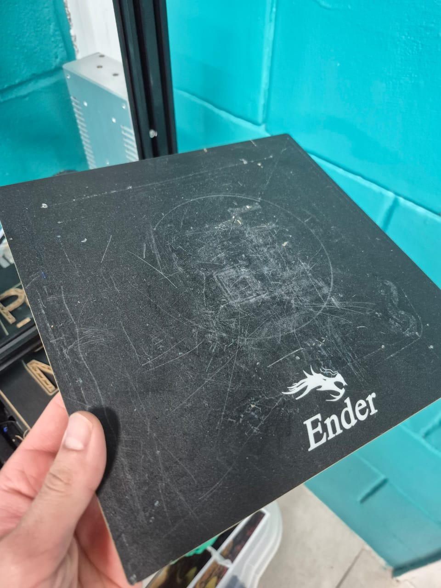

Conceitos essenciais
Fixação da primeira camada à superfície. Ela mantém a peça estável durante a impressão.
Ao esfriar, peça e mesa se contraem, o que normalmente facilita a separação.
Superfície que pode ser retirada da base aquecida para soltar a peça com mais controle.
Prendem a superfície removível à base e precisam ser retiradas antes de levantar a mesa.
1. Confirme que a impressão terminou
Observe a tela de informações. O progresso deve ter chegado ao fim e o cabeçote não deve estar imprimindo. Espere a máquina concluir todos os movimentos finais antes de tocar na mesa.

2. Aguarde a mesa e o bico esfriarem
Acompanhe as temperaturas na tela. Aguarde a mesa ficar próxima da temperatura ambiente e não toque no bico. Além de reduzir o risco de queimadura, o resfriamento ajuda a peça a se soltar com menos esforço.
3. Desligue a Ender 3
Quando a impressão tiver terminado e a mesa estiver fria, use o interruptor da lateral direita. Pressione o lado marcado com O.


4. Remova as presilhas da mesa
As presilhas seguram a superfície removível sobre a base aquecida. Na fotografia, elas estão destacadas em amarelo.

- Segure uma presilha pelas laterais.
- Puxe-a para fora da borda sem empurrar a peça impressa.
- Repita o procedimento na outra presilha.
- Guarde as presilhas em um local onde não se percam.
5. Retire a superfície da mesa
Segure a superfície removível pelas bordas e levante-a com cuidado. Não puxe fios, não force a base aquecida e não use a peça impressa como alça.

6. Solte a peça
- Apoie a superfície removível sobre uma bancada limpa e firme.
- Flexione-a levemente, sem dobrar nem marcar a superfície.
- Tente levantar a peça pela base, aplicando força gradual.
- Se ela não se soltar, espere mais alguns minutos e tente novamente.
7. Recoloque a mesa
Depois de retirar a peça, remova apenas resíduos soltos. Posicione novamente a superfície sobre a base aquecida, alinhe as bordas e reinstale as presilhas sem ocupar a área por onde o bico se movimenta.
- Conferir se a superfície está limpa e sem danos.
- Alinhar a superfície com a base da Ender 3.
- Recolocar as presilhas nas mesmas posições.
- Confirmar que nenhuma presilha invade a área de impressão.